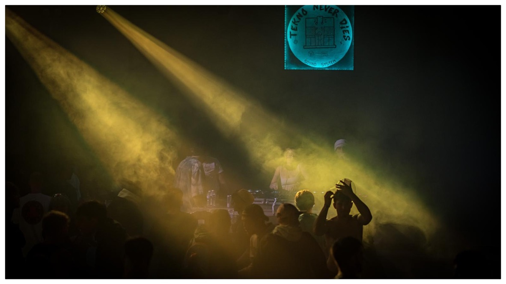
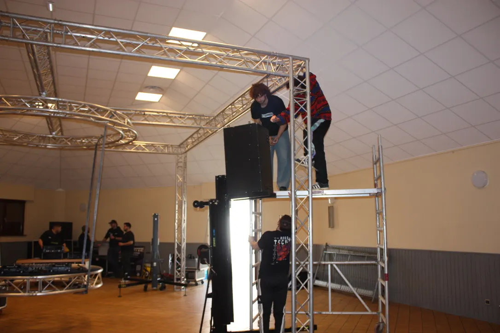
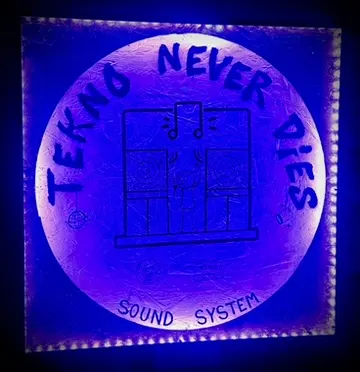

L'association

Une association de passionnés de musique électronique basée à Lauterbourg, dans le Bas-Rhin.
Qui sommes-nous ?
-
MissionPromouvoir, rassembler, faire vibrer
-
ObjectifDes expériences sonores et visuelles inoubliables
Tekno Never Dies est né à Lauterbourg d’une envie commune : faire vivre la musique électronique dans le Nord Alsace. Un groupe de passionné·es s’est peu à peu transformé en collectif, puis en association.
Nous imaginons des soirées où le son, les lumières et la scénographie créent une atmosphère à part. Mais une nuit TND, c’est aussi des rencontres, des visages familiers et de nouvelles personnes qui se retrouvent autour d’une même énergie.
L'équipe TND6TEM
Les membres et bénévoles font vivre les pôles technique, événementiel, communication et création.
Notre création
De l'idée au sound system.
-
L'idée naît
Passion commune pour la musique électronique et envie d'organiser des événements.
-
Le projet se construit
Définition des objectifs, constitution de l'équipe, recherche de matériel et préparation du projet.
-
Création de l'association
Déclaration officielle de l'association et lancement des premières activités.
-
Premières réalisations
Organisation des premiers événements et développement des prestations techniques.
Nos actions
Ce qui nous porte.
-
Événements
Concevoir et produire des soirées électroniques, de l'affiche à la dernière basse.
-
Sound system
Construire, transporter et entretenir notre matériel, pensé pour des basses profondes.
-
Projets locaux
Soutenir des initiatives et événements portés par d'autres collectifs de la région.
-
Bénévolat
Accueillir celles et ceux qui veulent s'impliquer, et les propositions de sets DJ.
Nos valeurs
Passion✳ Partage✳ Énergie
Nos événements
Une asso qui grandit.
-

150 personnes Fête de la musique 21 juin 2025 · Wissembourg -

200 personnes ICE BOILER 22 novembre 2025 · Munchhausen -

250 personnes Center Drop 4 avril 2026 · Niederroedern
Projet en cours
Le prochain rendez-vous.
La prochaine date annoncée est ICE BOILER v2, le samedi 28 novembre 2026 à 21h00, à la salle polyvalente de Munchhausen. Entrée 10 à 16 € en prévente, 18 € sur place, dès 16 ans.
Voir la soirée